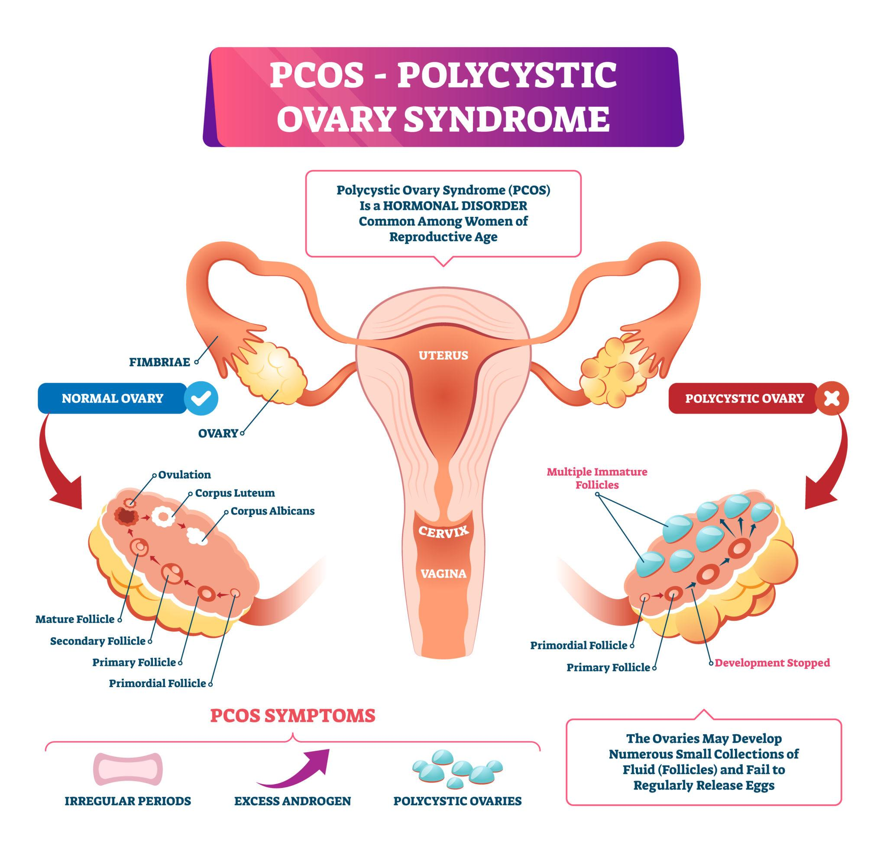

What is PCOS?
Polycystic Ovary Syndrome (PCOS) affects roughly 8% to 13% of women of reproductive age worldwide, though many remain undiagnosed. Despite the name, the tiny fluid-filled sacs seen on ultrasound are immature egg follicles rather than true cysts.
PCOS involves higher-than-typical levels of androgens (hormones present in all bodies) and often insulin resistance, which can disrupt regular ovulation and increase long-term metabolic risks if unmanaged.

Common symptoms
PCOS looks different from person to person — you do not need every symptom to have the condition.
-
Irregular, infrequent, or absent periods Hedhi zisizo za kawaida au zinazokosekana
Cycles longer than 35 days, fewer than 8 periods a year, or unpredictably heavy bleeding when a period arrives.
-
Signs of elevated androgens Dalili za kiwango cha juu cha androjeni
Persistent acne along the jawline or back, excess hair growth on the face, chin, or chest (hirsutism), or thinning scalp hair.
-
Metabolic & fertility shifts Mabadiliko ya uzito na uzazi
Weight gain (especially around the abdomen), darkened skin patches in skin folds (acanthosis nigricans), fatigue, and difficulty conceiving due to irregular ovulation.
How PCOS is diagnosed
There is no single test for PCOS. Doctors use the international Rotterdam criteria, diagnosing PCOS when other hormonal causes (such as thyroid disease) are ruled out and at least two of three criteria are met:
Irregular ovulation
Infrequent, irregular, or absent menstrual periods indicating eggs are not released regularly.
Elevated androgens
Higher androgen levels confirmed on a blood test, or clear clinical signs like excess hair growth or acne.
Ultrasound appearance
Ovaries showing multiple small immature follicles on a pelvic ultrasound scan.
Treatment & long-term management
While there is no permanent cure for PCOS, symptoms can be managed effectively based on your personal priorities — whether regulating periods, clearing skin, protecting metabolic health, or trying to conceive.
-
Nutrition & movement Lishe na mazoezi
Whole-grain, high-fibre meals paired with regular aerobic and strength exercise help lower insulin resistance and balance hormones.
-
Medical options for cycles & symptoms Dawa za kudhibiti hedhi na dalili
Combined hormonal contraceptives regulate periods and protect the uterine lining; medications such as metformin can improve insulin sensitivity; targeted anti-androgens help with acne and excess hair.
-
Fertility support when ready Msaada wa uzazi unapokuwa tayari
If you are trying to conceive, ovulation-inducing medications such as letrozole or clomifene are effective first-line options prescribed by a doctor.
PCOS questions
Yes. PCOS is one of the most treatable causes of ovulation-related infertility. Many women with PCOS conceive naturally or with straightforward medical support to trigger ovulation.
No. PCOS affects women of all body sizes. For those who do carry excess weight, a modest 5–10% reduction can significantly improve insulin sensitivity and cycle regularity.